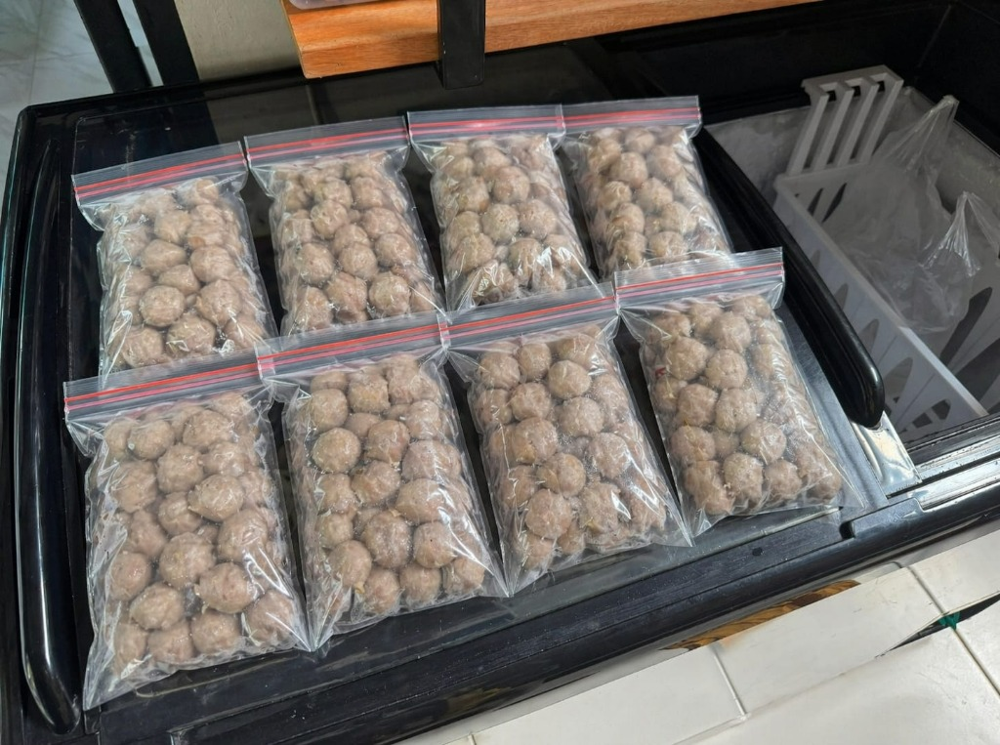
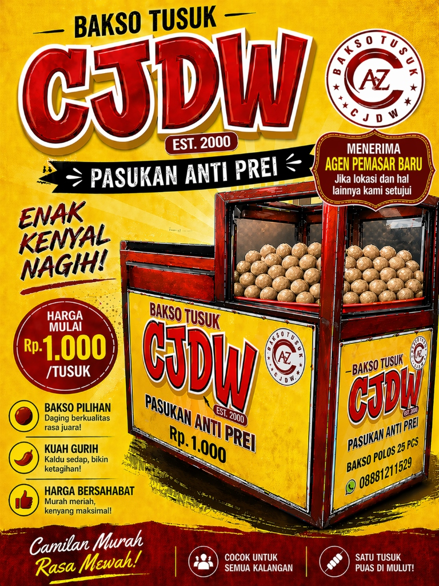

Camilan Murah Rasa Mewah

Bakso Eceran
Rp 1.000 / Tusuk
Favorit
Paket Frozen
Tersedia Isi 25 (Polos)
Praktis
Daging berkualitas dengan cita rasa juara di setiap tusukannya.
Kaldu sedap yang bikin ketagihan, diracik dengan bumbu rahasia.
Mulai dari Rp 1.000 per tusuk. Murah meriah, kenyang maksimal!
Bermula dari semangat "Pasukan Anti Prei", Bakso Tusuk CJDW telah melayani pecinta kuliner selama lebih dari dua dekade. Kami percaya bahwa camilan murah pun harus memiliki rasa yang mewah.

Rp 1.000 / Tusuk
Favorit
Tersedia Isi 25 (Polos)
PraktisProses pembuatan dan penyajian Bakso Tusuk CJDW yang selalu higienis dan nikmat.
Kami menerima Agen Pemasaran Baru. Jika lokasi dan ketentuan lainnya kami setujui, Anda bisa menjadi bagian dari Pasukan Anti Prei.
Daftar Agen Pemasar Sekarang